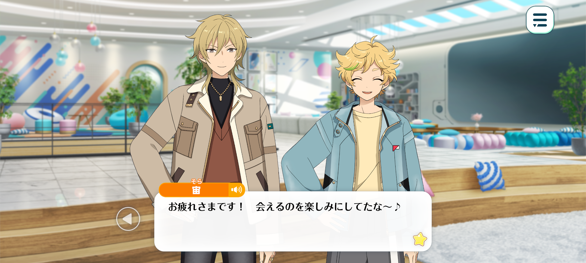
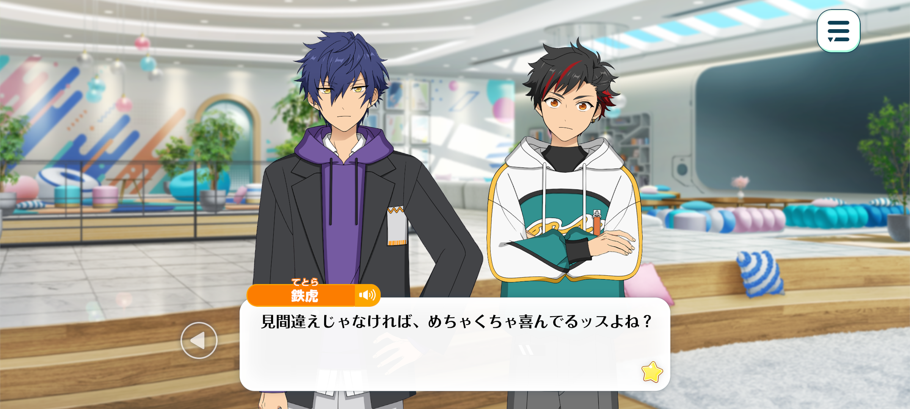
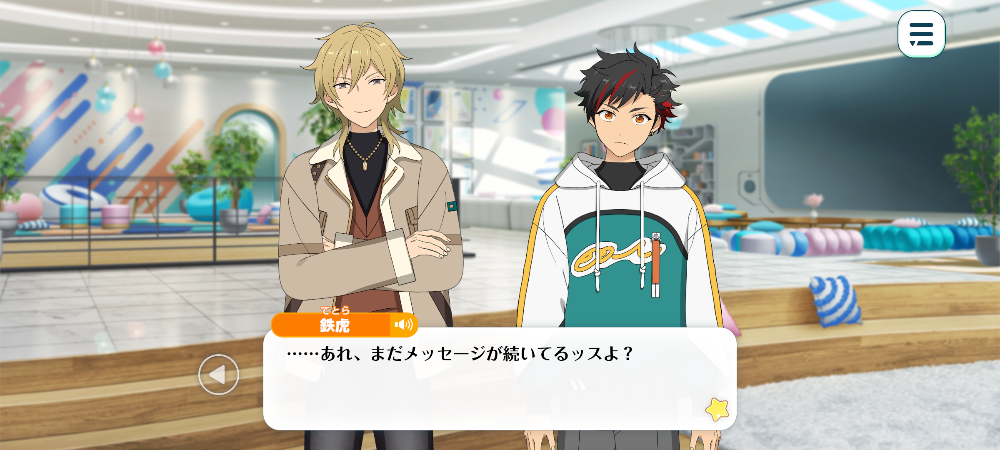

Scout! Ambassador Spopo
Passion Is The Key To Appeal – Chapter 6


Time: A few days later
Location: In the Starhouse Living Room

Kaoru: Sazanami-kun, Tetora-kun, how’s it going?
Sora: Hello! Sora’s been looking forward to seeing you again~♪
Jun: Hey guys. …I made sure to get here early today, but somehow you still managed to beat me.
Tetora: Yeah, same here... Have you two been waiting long?
Kaoru: Nope! We actually bumped into each other about two hours ago, so we grabbed something to eat and have just been having a gossip~♪
Sora: Sora wanted to hear more about Hane-oniisan's three-pointer!
Kaoru: That was just a fluke, honestly. There wasn't anything to it... But for some reason, he just won't believe me!
Sora: But your form was perfect~! Sora reckons you could totally do it again! ♪
Kaoru: Maybe, but I doubt I'll get another chance to play basketball any time soon. Besides, my muscles are still pretty sore, so I think I'll pass.
Jun: Ahaha, sounds like you've had plenty to talk about. I'm glad we didn't keep you waiting.
Anyway... Hakaze-senpai, you got a reply from Spopo this morning, didn't you?
Kaoru: Yep! But I haven't opened it yet. I thought it'd be nice if we could all read it together.
Tetora: Ughhh... Just thinking about what we sent them is making me nervous all over again.
D'you reckon it'll be okay...? I mean, not that I thought we'd done a bad job or anything, but still...
It was all pretty thrown together, so I'm kinda worried they're gonna come back with a whole list of things they want us to fix.
Kaoru: They did leave it up to us to decide how best to promote the products, but none of our agencies have got in touch with us either, so... Maybe that's a good sign?
...Well, there's no point worrying about it now. Shall we just take a look?
Jun: Yeah. Even if they're unhappy with our work, we can figure out what to do next once we've seen their reply.
Sora: Yep! We've come this far, so there's no point regretting anything now~!
Tetora: I guess you're right... All right, Hakaze-senpai! Do the honours!
Kaoru: Of course. Here goes…
Hm? That’s…
Sora: …A really long paragraph~?

Jun: It is, but…
Tetora: If I'm reading this right... they're actually really happy with our work?
Jun: Yeah. It doesn't look like they're telling us off. In fact, it seems they've gone to the trouble of putting together a whole list of compliments!
Our idea of making several different videos, each focusing on a different aspect of the products...
...was easy to understand and was well received by customers.
Kaoru: They liked the approach, and it seems the videos themselves have gone down really well, too.
“I'm not really sure what's going on, but I can't stop watching!”, “You can't help but cheer them on as they give it their all!”, “Before I knew it, I'd got completely caught up in watching them!”
Apparently, they've been quite the talking point on social media, too~!
Sora: And thanks to that, all the stock they'd set aside for pre-orders has already sold out!
It sounds like they're scrambling to get more stock in~!
Tetora: T-they're not angry with us...? We actually did a great job?!
What a relief...! I can't believe we pulled it off!
Jun: Right? I feel like I can actually relax now...
Kaoru: It's such a weight off our shoulders, isn't it? ...I was really worried about whether everything would turn out all right.
But I had no idea the videos had become so popular online. When did all this happen...?
Sora: It feels like we only filmed them yesterday! Sora's been so busy with work that he hasn't even noticed until now~...
Tetora: Same here. So none of us had any idea what was going on, just 'cuz we were all too busy to check online?
Jun: Ahaha. Maybe we should make a point of keeping an eye on things from now on, huh~?
Still, just this once... I'm glad we got to find out how well we'd done together...♪
Sora: Sora's glad we got to do it all together, too~♪
Kaoru: Yeah, same here.
Anyway, I'm glad our first job as ambassadors went off without a hitch. It gives me hope that our next assignments will go just as well...

Tetora: ...Hey, look! There's another message!
Kaoru: Oh, you're right. There is...?
Jun: It's a new assignment? And it's the same sort of thing as the one we just did...
Kaoru: Let's see... “We'd like you to promote our new line of shoes.”
“We're looking forward to seeing an even more entertaining video than last time!”...
...I'm glad they have such high expectations of us, but haven't they set the bar a little too high when it comes to entertainment value?!
Jun: W-what are we going to do this time...?
Tetora: We've already done an infomercial, and it's not like we can just play basketball again, is it?!
Kaoru: ...It's one thing after another, isn't it?
Sora: But Sora’s happy he gets to make another video with everyone!
Sora's sure we can come up with another super-fun video that'll blow everyone away~! ♪